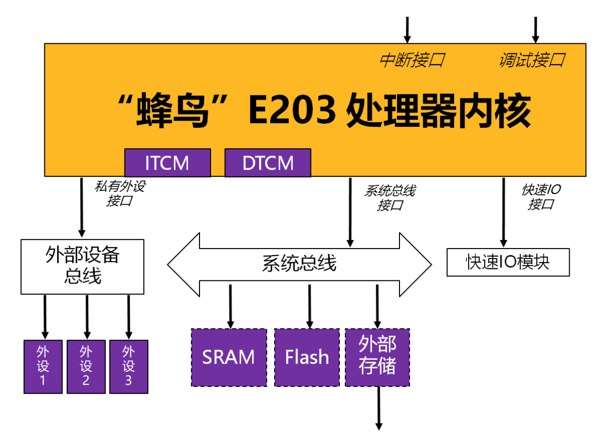

LCD Screen UI Pages & Flappy Bird Pixel Engine
• 手势划屏翻页：基于 XPT2046 电阻式触屏控制器与 Cortex-M3 位带读写 SPI 时序，支持高灵敏度左划、右划手势进行多页无缝切换。
Slate 暗灰色两栏布局，一屏展现温湿度、气压、AI 滤波值与在线状态。
左侧显示 AI 均值与偏差，右侧利用 LCD 高速绘制 24 点示波偏差折线图。
以精美的垂直时间轴，显示最新 7 条异常日志快照（发生时间/基准/异常值）。
内置经典 Flappy Bird 游戏。轻触屏幕中央区域即可起飞，物理按键与触屏双重操作。
• 增量局部刷新与动态块渲染 (Dirty Rects)：为攻克串行总线传输 150KB 满屏数据带来的白屏延迟，本设计仅刷新小鸟运动包围盒（16 × 16 像素）与移动管道的边缘变化区（32 × 64 像素）。使单帧 SPI 数据量锐减 **`93%`**，在软件模拟时序下跑出了 30+ FPS 无闪烁的超顺滑游戏视效。
